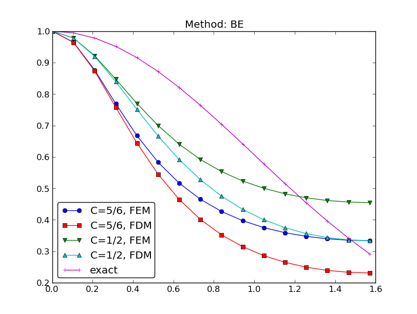
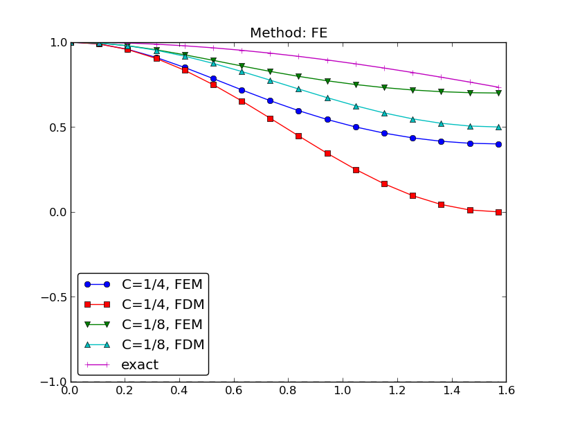

Differential equation models
Abstract differential equation
Abstract boundary conditions
Reminder about notation
New topics
Residual-minimizing principles
The least squares method
The Galerkin method
The Method of Weighted Residuals
Terminology: test and trial Functions
The collocation method
Examples on using the principles
The first model problem
Boundary conditions
The least squares method; principle
The least squares method; equation system
Orthogonality of the basis functions gives diagonal matrix
Least squares method; solution
The Galerkin method; principle
The Galerkin method; solution
The collocation method
Comparison of the methods
Useful techniques
Integration by parts
Boundary function; principles
Boundary function; example (1)
Boundary function; example (2)
Impact of the boundary function on the space where we seek the solution
Abstract notation for variational formulations
Example on abstract notation
Bilinear and linear forms
The linear system associated with abstract form
Equivalence with minimization problem
Examples on variational formulations
Variable coefficient; problem
Variable coefficient; variational formulation (1)
Variable coefficient; variational formulation (2)
Variable coefficient; linear system (the easy way)
Variable coefficient; linear system (full derivation)
First-order derivative in the equation and boundary condition; problem
First-order derivative in the equation and boundary condition; details
First-order derivative in the equation and boundary condition; observations
First-order derivative in the equation and boundary condition; abstract notation
First-order derivative in the equation and boundary condition; linear system
Terminology: natural and essential boundary conditions
Nonlinear coefficient; problem
Nonlinear coefficient; variational formulation
Nonlinear coefficient; where does the nonlinearity cause challenges?
Computing with Dirichlet and Neumann conditions; problem
Computing with Dirichlet and Neumann conditions; details
When the numerical method is exact
Computing with finite elements
Variational formulation, finite element mesh, and basis
Computation in the global physical domain; formulas
Computation in the global physical domain; details
Computation in the global physical domain; linear system
Comparison with a finite difference discretization
Cellwise computations; formulas
Cellwise computations; details
Cellwise computations; details of boundary cells
Cellwise computations; assembly
General construction of a boundary function
Example with two Dirichlet values; variational formulation
Example with two Dirichlet values; boundary function
Example with two Dirichlet values; details
Example with two Dirichlet values; cellwise computations
Modification of the linear system; ideas
Modification of the linear system; original system
Modification of the linear system; row replacement
Modification of the linear system; element matrix/vector
Symmetric modification of the linear system; algorithm
Symmetric modification of the linear system; example
Symmetric modification of the linear system; element level
Boundary conditions: specified derivative
The variational formulation
Method 1: Boundary function and exclusion of Dirichlet degrees of freedom
Method 2: Use all \( \basphi_i \) and insert the Dirichlet condition in the linear system
How the Neumann condition impacts the element matrix and vector
The finite element algorithm
Python pseudo code; the element matrix and vector
Python pseudo code; boundary conditions and assembly
Variational formulations in 2D and 3D
Integration by parts
Example on integration by parts; problem
Example on integration by parts; details (1)
Example on integration by parts; details (2)
Example on integration by parts; linear system
Transformation to a reference cell in 2D/3D (1)
Transformation to a reference cell in 2D/3D (2)
Numerical integration
Time-dependent problems
Example: diffusion problem
A Forward Euler scheme; ideas
A Forward Euler scheme; stages in the discretization
A Forward Euler scheme; weighted residual (or Galerkin) principle
A Forward Euler scheme; integration by parts
New notation for the solution at the most recent time levels
Deriving the linear systems
Structure of the linear systems
Computational algorithm
Comparing P1 elements with the finite difference method; ideas
Comparing P1 elements with the finite difference method; results
Discretization in time by a Backward Euler scheme
The variational form of the time-discrete problem
Calculations with P1 elements in 1D
Dirichlet boundary conditions
Boundary function
Modification of the linear system (1)
Modification of the linear system (2)
Modification of the linear system (3)
Analysis of the discrete equations
Amplification factor for the Forward Euler method; results
Amplification factor for the Forward Euler method; plot
Amplification factor for the Backward Euler method; results
Amplification factors for smaller time steps; Forward Euler
Amplification factors for smaller time steps; Backward Euler
Our aim is to extend the ideas for approximating \( f \) by \( u \), or solving
$$ u = f $$
to real differential equations like[[[
$$ -u'' + bu = f,\quad u(0)=1,\ u'(L)=D $$
Three methods are addressed:
$$ \begin{equation} \mathcal{L}(u) = 0,\quad x\in\Omega \end{equation} $$
Examples (1D problems):
$$ \begin{align} \mathcal{L}(u) &= \frac{d^2u}{dx^2} - f(x), \label{fem:deq:1D:L1}\\ \mathcal{L}(u) &= \frac{d}{dx}\left(\dfc(x)\frac{du}{dx}\right) + f(x), \label{fem:deq:1D:L2}\\ \mathcal{L}(u) &= \frac{d}{dx}\left(\dfc(u)\frac{du}{dx}\right) - au + f(x), \label{fem:deq:1D:L3}\\ \mathcal{L}(u) &= \frac{d}{dx}\left(\dfc(u)\frac{du}{dx}\right) + f(u,x) \label{fem:deq:1D:L4} \end{align} $$
$$ \begin{equation} {\cal B}_0(u)=0,\ x=0,\quad {\cal B}_1(u)=0,\ x=L \end{equation} $$
Examples:
$$ \begin{align} \mathcal{B}_i(u) &= u - g,\quad &\hbox{Dirichlet condition}\\ \mathcal{B}_i(u) &= -\dfc \frac{du}{dx} - g,\quad &\hbox{Neumann condition}\\ \mathcal{B}_i(u) &= -\dfc \frac{du}{dx} - h(u-g),\quad &\hbox{Robin condition} \end{align} $$
Much is similar to approximating a function (solving \( u=f \)), but two new topics are needed:
$$ \begin{equation} R = \mathcal{L}(u) = \mathcal{L}(\sum_j c_j \baspsi_j) \neq 0 \end{equation} $$
Goal: minimize \( R \) wrt \( \sequencei{c} \) (and hope it makes a small \( e \) too)
$$ R=R(c_0,\ldots,c_N; x)$$
Idea: minimize
$$ \begin{equation} E = ||R||^2 = (R,R) = \int_{\Omega} R^2 dx \end{equation} $$
Minimization wrt \( \sequencei{c} \) implies
$$ \begin{equation} \frac{\partial E}{\partial c_i} = \int_{\Omega} 2R\frac{\partial R}{\partial c_i} dx = 0\quad \Leftrightarrow\quad (R,\frac{\partial R}{\partial c_i})=0,\quad i\in\If \label{fem:deq:1D:LS:eq1} \end{equation} $$
\( N+1 \) equations for \( N+1 \) unknowns \( \sequencei{c} \)
Idea: make \( R \) orthogonal to \( V \),
$$ \begin{equation} (R,v)=0,\quad \forall v\in V \label{fem:deq:1D:Galerkin0} \end{equation} $$
This implies
$$ \begin{equation} (R,\baspsi_i)=0,\quad i\in\If \label{fem:deq:1D:Galerkin} \end{equation} $$
\( N+1 \) equations for \( N+1 \) unknowns \( \sequencei{c} \)
Generalization of the Galerkin method: demand \( R \) orthogonal to some space \( W \), possibly \( W\neq V \):
$$ \begin{equation} (R,v)=0,\quad \forall v\in W \label{fem:deq:1D:WRM0} \end{equation} $$
If \( \{w_0,\ldots,w_N\} \) is a basis for \( W \):
$$ \begin{equation} (R,w_i)=0,\quad i\in\If \label{fem:deq:1D:WRM} \end{equation} $$
Idea: demand \( R=0 \) at \( N+1 \) points
$$ \begin{equation} R(\xno{i}; c_0,\ldots,c_N)=0,\quad i\in\If \label{fem:deq:1D:collocation} \end{equation} $$
Note: The collocation method is a weighted residual method with delta functions as weights
$$ 0 = \int_\Omega R(x;c_0,\ldots,c_N) \delta(x-\xno{i})\dx = R(\xno{i}; c_0,\ldots,c_N)$$
$$ \begin{equation} \hbox{property of } \delta(x):\quad \int_{\Omega} f(x)\delta (x-\xno{i}) dx = f(\xno{i}),\quad \xno{i}\in\Omega \label{fem:deq:1D:Dirac} \end{equation} $$
$$ \begin{equation} -u''(x) = f(x),\quad x\in\Omega=[0,L],\quad u(0)=0,\ u(L)=0 \label{fem:deq:1D:model1b} \end{equation} $$
Basis functions:
$$ \begin{equation} \baspsi_i(x) = \sinL{i},\quad i\in\If \label{fem:deq:1D:ex:sines:psi} \end{equation} $$
The residual:
$$ \begin{align} R(x;c_0,\ldots,c_N) &= u''(x) + f(x),\nonumber\\ &= \frac{d^2}{dx^2}\left(\sum_{j\in\If} c_j\baspsi_j(x)\right) + f(x),\nonumber\\ &= -\sum_{j\in\If} c_j\baspsi_j''(x) + f(x) \label{fem:deq:1D:ex:sines:res} \end{align} $$
Since \( u(0)=u(L)=0 \) we must ensure that all \( \baspsi_i(0)=\baspsi_i(L)=0 \). Then
$$ u(0) = \sum_jc_j\baspsi_j(0) = 0,\quad u(L) = \sum_jc_j\baspsi_j(L) $$
$$ (R,\frac{\partial R}{\partial c_i}) = 0,\quad i\in\If $$
$$ \begin{equation} \frac{\partial R}{\partial c_i} = \frac{\partial}{\partial c_i} \left(\sum_{j\in\If} c_j\baspsi_j''(x) + f(x)\right) = \baspsi_i''(x) \end{equation} $$
Because: $$ \frac{\partial}{\partial c_i}\left(c_0\baspsi_0'' + c_1\baspsi_1'' + \cdots + c_{i-1}\baspsi_{i-1}'' + \color{blue}{c_i\baspsi_{i}''} + c_{i+1}\baspsi_{i+1}'' + \cdots + c_N\baspsi_N'' \right) = \baspsi_{i}'' $$
$$ \begin{equation} (\sum_j c_j \baspsi_j'' + f,\baspsi_i'')=0,\quad i\in\If \end{equation} $$
Rearrangement:
$$ \begin{equation} \sum_{j\in\If}(\baspsi_i'',\baspsi_j'')c_j = -(f,\baspsi_i''),\quad i\in\If \end{equation} $$
This is a linear system
$$ \begin{equation*} \sum_{j\in\If}A_{i,j}c_j = b_i,\quad i\in\If \end{equation*} $$ with
$$ \begin{align} A_{i,j} &= (\baspsi_i'',\baspsi_j'')\nonumber\\ & = \pi^4(i+1)^2(j+1)^2L^{-4}\int_0^L \sinL{i}\sinL{j}\, dx\nonumber\\ &= \left\lbrace \begin{array}{ll} {1\over2}L^{-3}\pi^4(i+1)^4 & i=j \\ 0, & i\neq j \end{array}\right. \\ b_i &= -(f,\baspsi_i'') = (i+1)^2\pi^2L^{-2}\int_0^Lf(x)\sinL{i}\, dx \end{align} $$
Useful property:
$$ \begin{equation} \int\limits_0^L \sinL{i}\sinL{j}\, dx = \delta_{ij},\quad \quad\delta_{ij} = \left\lbrace \begin{array}{ll} \half L & i=j \\ 0, & i\neq j \end{array}\right. \end{equation} $$
\( \Rightarrow\ (\baspsi_i'',\baspsi_j'') = \delta_{ij} \), i.e., diagonal \( A_{i,j} \), and we can easily solve for \( c_i \):
$$ \begin{equation} c_i = \frac{2L}{\pi^2(i+1)^2}\int_0^Lf(x)\sinL{i}\, dx \label{fem:deq:1D:ex:sines:solution} \end{equation} $$
Let's sympy do the work (\( f(x)=2 \)):
1 2 3 4 5 6 7 8 9 10 | from sympy import *
import sys
i, j = symbols('i j', integer=True)
x, L = symbols('x L')
f = 2
a = 2*L/(pi**2*(i+1)**2)
c_i = a*integrate(f*sin((i+1)*pi*x/L), (x, 0, L))
c_i = simplify(c_i)
print c_i
|
$$ \begin{equation} c_i = 4 \frac{L^{2} \left(\left(-1\right)^{i} + 1\right)}{\pi^{3} \left(i^{3} + 3 i^{2} + 3 i + 1\right)},\quad u(x) = \sum_{k=0}^{N/2} \frac{8L^2}{\pi^3(2k+1)^3}\sinL{2k}\tp \end{equation} $$
Fast decay: \( c_2 = c_0/27 \), \( c_4=c_0/125 \) - only one term might be good enough:
$$ \begin{equation*} u(x) \approx \frac{8L^2}{\pi^3}\sin\left(\pi\frac{x}{L}\right)\tp \end{equation*} $$
\( R=u''+f \):
$$ \begin{equation*} (u''+f,v)=0,\quad \forall v\in V, \end{equation*} $$ or
$$ \begin{equation} (u'',v) = -(f,v),\quad\forall v\in V \end{equation} $$
This is a variational formulation of the differential equation problem.
\( \forall v\in V \) means for all basis functions:
$$ \begin{equation} (\sum_{j\in\If} c_j\baspsi_j'', \baspsi_i)=-(f,\baspsi_i),\quad i\in\If \end{equation} $$
Since \( \baspsi_i''\propto \baspsi_i \), Galerkin's method gives the same linear system and the same solution as the least squares method (in this particular example).
\( R=0 \) (i.e.,the differential equation) must be satisfied at \( N+1 \) points:
$$ \begin{equation} -\sum_{j\in\If} c_j\baspsi_j''(\xno{i}) = f(\xno{i}),\quad i\in\If \end{equation} $$
This is a linear system \( \sum_j A_{i,j}=b_i \) with entries
$$ \begin{equation*} A_{i,j}=-\baspsi_j''(\xno{i})= (j+1)^2\pi^2L^{-2}\sin\left((j+1)\pi \frac{x_i}{L}\right), \quad b_i=2 \end{equation*} $$
Choose: \( N=0 \), \( x_0=L/2 \)
$$ c_0=2L^2/\pi^2 $$
Second-order derivatives will hereafter be integrated by parts
$$ \begin{align} \int_0^L u''(x)v(x) dx &= - \int_0^Lu'(x)v'(x)dx + [vu']_0^L\nonumber\\ &= - \int_0^Lu'(x)v'(x) dx + u'(L)v(L) - u'(0)v(0) \label{fem:deq:1D:intbyparts} \end{align} $$
Motivation:
Dirichlet conditions: \( u(0)=C \) and \( u(L)=D \). Choose for example
$$ B(x) = \frac{1}{L}(C(L-x) + Dx):\qquad B(0)=C,\ B(L)=D $$
$$ \begin{equation} u(x) = B(x) + \sum_{j\in\If} c_j\baspsi_j(x), \label{fem:deq:1D:essBC:Bfunc:u1} \end{equation} $$
$$ u(0) = B(0)= C,\quad u(L) = B(L) = D $$
Dirichlet condition: \( u(L)=D \). Choose for example
$$ B(x) = D:\qquad B(L)=D $$
$$ \begin{equation} u(x) = B(x) + \sum_{j\in\If} c_j\baspsi_j(x), \label{fem:deq:1D:essBC:Bfunc:u1} \end{equation} $$
$$ u(L) = B(L) = D $$
The finite element literature (and much FEniCS documentation) applies an abstract notation for the variational formulation:
$$ a(u,v) = L(v)\quad \forall v\in V $$
$$ -u''=f, \quad u'(0)=C,\ u(L)=D,\quad u=D + \sum_jc_j\baspsi_j$$
Variational formulation:
$$ \int_{\Omega} u' v'dx = \int_{\Omega} fvdx\quad - v(0)C \hbox{or}\quad (u',v') = (f,v) - v(0)C \quad\forall v\in V $$
Abstract formulation: finn \( (u-B)\in V \) such that
$$ a(u,v) = L(v)\quad \forall v\in V$$
We identify
$$ a(u,v) = (u',v'),\quad L(v) = (f,v) -v(0)C $$
$$ L(\alpha_1 v_1 + \alpha_2 v_2) =\alpha_1 L(v_1) + \alpha_2 L(v_2), $$
Bilinear form means $$ \begin{align*} a(\alpha_1 u_1 + \alpha_2 u_2, v) &= \alpha_1 a(u_1,v) + \alpha_2 a(u_2, v), \\ a(u, \alpha_1 v_1 + \alpha_2 v_2) &= \alpha_1 a(u,v_1) + \alpha_2 a(u, v_2) \end{align*} $$
In nonlinear problems: Find \( (u-B)\in V \) such that \( F(u;v)=0\ \forall v\in V \)
$$ a(u,v) = L(v)\quad \forall v\in V\quad\Leftrightarrow\quad a(u,\baspsi_i) = L(\baspsi_i)\quad i\in\If$$
We can now derive the corresponding linear system once and for all:
$$ a(\sum_{j\in\If} c_j \baspsi_j,\baspsi_i)c_j = L(\baspsi_i)\quad i\in\If$$
Because of linearity,
$$ \sum_{j\in\If} \underbrace{a(\baspsi_j,\baspsi_i)}_{A_{i,j}}c_j = \underbrace{L(\baspsi_i)}_{b_i}\quad i\in\If$$
$$ A_{i,j} = a(\baspsi_j,\baspsi_i),\quad b_i = L(\baspsi_i) $$
If \( a(u,v)=a(v,u) \),
$$ a(u,v)=L(v)\quad\forall v\in V,$$
is equivalent to minimizing the functional
$$ F(v) = \frac{1}{2}a(v,v) - L(v) $$ over all functions \( v\in V \). That is,
$$ F(u)\leq F(v)\quad \forall v\in V\tp $$
$$ \begin{equation} -\frac{d}{dx}\left( \dfc(x)\frac{du}{dx}\right) = f(x),\quad x\in\Omega =[0,L],\ u(0)=C,\ u(L)=D \end{equation} $$
$$ B(x) = C + \frac{1}{L}(D-C)x$$
$$ R = -\frac{d}{dx}\left( a\frac{du}{dx}\right) -f $$
Galerkin's method:
$$ (R, v) = 0,\quad \forall v\in V, $$
or with integrals:
$$ \int_{\Omega} \left(\frac{d}{dx}\left( \dfc\frac{du}{dx}\right) -f\right)v \dx = 0,\quad \forall v\in V \tp $$
Integration by parts:
$$ -\int_{\Omega} \frac{d}{dx}\left( \dfc(x)\frac{du}{dx}\right) v \dx = \int_{\Omega} \dfc(x)\frac{du}{dx}\frac{dv}{dx}\dx - \left[\dfc\frac{du}{dx}v\right]_0^L \tp $$
Boundary terms vanish since \( v(0)=v(L)=0 \)
Find \( (u-B)\in V \) such that
$$ \int_{\Omega} \dfc(x)\frac{du}{dx}\frac{dv}{dx}dx = \int_{\Omega} f(x)vdx,\quad \forall v\in V, $$
Compact notation:
$$ \underbrace{(\dfc u',v')}_{a(u,v)} = \underbrace{(f,v)}_{L(v)}, \quad \forall v\in V $$
With
$$ a(u,v) = (\dfc u', v),\quad L(v) = (f,v) $$
we can just use the formula for the linear system:
$$ \begin{align*} A_{i,j} &= a(\baspsi_j,\baspsi_i) = (\dfc \baspsi_j', \baspsi_i') = \int_\Omega \dfc \baspsi_j' \baspsi_i'\dx = \int_\Omega \baspsi_i' \dfc \baspsi_j'\dx = a(\baspsi_i,\baspsi_j) = A_{j,i}\\ b_i &= (f,\baspsi_i) = \int_\Omega f\baspsi_i\dx \end{align*} $$
\( v=\baspsi_i \) and \( u=B + \sum_jc_j\baspsi_j \):
$$ (\dfc B' + \dfc \sum_{j\in\If} c_j \baspsi_j', \baspsi_i') = (f,\baspsi_i), \quad i\in\If \tp $$
Reorder to form linear system:
$$ \sum_{j\in\If} (\dfc\baspsi_j', \baspsi_i')c_j = (f,\baspsi_i) + (a(D-C)L^{-1}, \baspsi_i'), \quad i\in\If \tp $$
This is \( \sum_j A_{i,j}c_j=b_i \) with
$$ \begin{align*} A_{i,j} &= (a\baspsi_j', \baspsi_i') = \int_{\Omega} \dfc(x)\baspsi_j'(x) \baspsi_i'(x)\dx\\ b_i &= (f,\baspsi_i) + (a(D-C)L^{-1},\baspsi_i')= \int_{\Omega} \left(f(x)\baspsi_i(x) + \dfc(x)\frac{D-C}{L}\baspsi_i'(x)\right) \dx \end{align*} $$
$$ \begin{equation} -u''(x) + bu'(x) = f(x),\quad x\in\Omega =[0,L],\ u(0)=C,\ u'(L)=E \end{equation} $$
New features:
$$ u = C + \sum_{j\in\If} c_j \baspsi_i(x)$$
Galerkin's method: multiply by \( v \), integrate over \( \Omega \), integrate by parts.
$$ (-u'' + bu' - f, v) = 0,\quad\forall v\in V$$
$$ (u',v') + (bu',v) = (f,v) + [u' v]_0^L, \quad\forall v\in V$$
Now, \( [u' v]_0^L = u'(L)v(L) = E v(L) \) because \( v(0)=0 \) and \( u'(L)=E \):
$$ (u'v') + (bu',v) = (f,v) + Ev(L), \quad\forall v\in V$$
$$ (u'v') + (bu',v) = (f,v) + Ev(L), \quad\forall v\in V,$$
Important:
Abstract notation:
$$ a(u,v)=L(v)\quad\forall v\in V$$
Here:
$$ \begin{align*} a(u,v)&=(u',v') + (bu',v)\\ L(v)&= (f,v) + E v(L) \end{align*} $$
Insert \( u=C+\sum_jc_j\baspsi_j \) and \( v=\baspsi_i \):
$$ \sum_{j\in\If} \underbrace{((\baspsi_j',\baspsi_i') + (b\baspsi_j',\baspsi_i))}_{A_{i,j}} c_j = \underbrace{(f,\baspsi_i) + E \baspsi_i(L)}_{b_i} $$
Observation: \( A_{i,j} \) is not symmetric because of the term
$$ (b\baspsi_j',\baspsi_i)=\int_{\Omega} b\baspsi_j'\baspsi_i dx \neq \int_{\Omega} b \baspsi_i' \baspsi_jdx = (\baspsi_i',b\baspsi_j) $$
$$ (u',v') + (bu',v) = (f,v) + u'(L)v(L) - u'(0)v(0)$$
Problem:
$$ \begin{equation} -(\dfc(u)u')' = f(u),\quad x\in [0,L],\ u(0)=0,\ u'(L)=E \end{equation} $$
Galerkin: multiply by \( v \), integrate, integrate by parts
$$ \int_0^L \dfc(u)\frac{du}{dx}\frac{dv}{dx}\dx = \int_0^L f(u)v\dx + [\dfc(u)vu']_0^L\quad\forall v\in V $$
or
$$ (\dfc(u)u', v') = (f(u),v) + \dfc(u(L))v(L)E\quad\forall v\in V $$
$$ \begin{equation*} -u''(x)=f(x),\quad x\in \Omega=[0,1],\quad u'(0)=C,\ u(1)=D \end{equation*} $$
$$ A_{i,j} = (\baspsi_j',\baspsi_i') = \int_{0}^1 \baspsi_i'(x)\baspsi_j'(x)dx = \int_0^1 (i+1)(j+1)(1-x)^{i+j} dx, $$
Choose \( f(x)=2 \):
$$ \begin{align*} b_i &= (2,\baspsi_i) - (D,\baspsi_i') -C\baspsi_i(0)\\ &= \int_0^1 \left( 2(1-x)^{i+1} - D(i+1)(1-x)^i\right)dx -C\baspsi_i(0) \end{align*} $$
Can easily do the integrals with sympy. \( N=1 \):
$$ \begin{equation*} \left(\begin{array}{cc} 1 & 1\\ 1 & 4/3 \end{array}\right) \left(\begin{array}{c} c_0\\ c_1 \end{array}\right) = \left(\begin{array}{c} -C+D+1\\ 2/3 -C + D \end{array}\right) \end{equation*} $$
$$ c_0=-C+D+2, \quad c_1=-1,$$
$$ u(x) = 1 -x^2 + D + C(x-1)\quad\hbox{(exact solution)} $$
Assume that apart from boundary conditions, \( \uex \) lies in the same space \( V \) as where we seek \( u \):
$$ \begin{align*} u &= B + F,\quad F\in V a(B+F, v) &= L(v)\quad\forall v\in V \uex & = B + E,\quad E\in V a(B+E, v) &= L(v)\quad\forall v\in V \end{align*} $$
Subtract: \( a(F-E,v)=0\ \Rightarrow\ E=F \) and \( u = \uex \)
Tasks:
$$ -u''(x) = 2,\quad x\in (0,L),\ u(0)=u(L)=0,$$
Variational formulation:
$$ (u',v') = (2,v)\quad\forall v\in V $$
Since \( u(0)=0 \) and \( u(L)=0 \), we must force
$$ v(0)=v(L)=0,\quad \baspsi_i(0)=\baspsi_i(L)=0$$
Use finite element basis, but exclude \( \basphi_0 \) and \( \basphi_{N_n} \) since these are not 0 on the boundary:
$$ \baspsi_i=\basphi_{i+1},\quad i=0,\ldots,N=N_n-2$$
Introduce index mapping \( \nu(j) \): \( \baspsi_i = \basphi_{\nu(i)} \)
$$ u = \sum_{j\in\If}c_j\basphi_{\nu(i)},\quad i=0,\ldots,N,\quad \nu(j) = j+1$$
Irregular numbering: more complicated \( \nu(j) \) table
$$ \begin{equation*} A_{i,j}=\int_0^L\basphi_{i+1}'(x)\basphi_{j+1}'(x) dx,\quad b_i=\int_0^L2\basphi_{i+1}(x) dx \end{equation*} $$
Many will prefer to change indices to obtain a \( \basphi_i'\basphi_j' \) product: \( i+1\rightarrow i \), \( j+1\rightarrow j \)
$$ \begin{equation*} A_{i-1,j-1}=\int_0^L\basphi_{i}'(x)\basphi_{j}'(x) \dx,\quad b_{i-1}=\int_0^L2\basphi_{i}(x) \dx \end{equation*} $$

$$ \basphi_i = \pm h^{-1} $$
$$ A_{i-1,i-1} = h^{-2}2h = 2h^{-1},\quad A_{i-1,i-2} = h^{-1}(-h^{-1})h = -h^{-1},\quad A_{i-1,i}=A_{i-1,i-2}$$
$$ b_{i-1} = 2(\frac{1}{2}h + \frac{1}{2}h) = 2h$$
$$ \begin{equation} \frac{1}{h}\left( \begin{array}{ccccccccc} 2 & -1 & 0 &\cdots & \cdots & \cdots & \cdots & \cdots & 0 \\ -1 & 2 & -1 & \ddots & & & & & \vdots \\ 0 & -1 & 2 & -1 & \ddots & & & & \vdots \\ \vdots & \ddots & & \ddots & \ddots & 0 & & & \vdots \\ \vdots & & \ddots & \ddots & \ddots & \ddots & \ddots & & \vdots \\ \vdots & & & 0 & -1 & 2 & -1 & \ddots & \vdots \\ \vdots & & & & \ddots & \ddots & \ddots &\ddots & 0 \\ \vdots & & & & &\ddots & \ddots &\ddots & -1 \\ 0 &\cdots & \cdots &\cdots & \cdots & \cdots & 0 & -1 & 2 \end{array} \right) \left( \begin{array}{c} c_0 \\ \vdots\\ \vdots\\ \vdots \\ \vdots \\ \vdots \\ \vdots \\ \vdots\\ c_{N} \end{array} \right) = \left( \begin{array}{c} 2h \\ \vdots\\ \vdots\\ \vdots \\ \vdots \\ \vdots \\ \vdots \\ \vdots\\ 2h \end{array} \right) \label{fem:deq:1D:ex1:Ab:glob} \end{equation} $$
The standard finite difference method for \( -u''=2 \) is
$$ -\frac{1}{h^2}u_{i-1} + \frac{2}{h^2}u_{i} - \frac{1}{h^2}u_{i+1} = 2 $$
(Remains to study the equations involving boundary values)
$$ \refphi_0(X)=\half(1-X),\quad\refphi_1(X)=\half(1+X)$$
$$ \frac{d\refphi_0}{dX} = -\half,\quad \frac{d\refphi_1}{dX} = \half $$
From the chain rule
$$ \frac{d\refphi_r}{dx} = \frac{d\refphi_r}{dX}\frac{dX}{dx} = \frac{2}{h}\frac{d\refphi_r}{dX}$$
$$ \begin{equation*} A_{i-1,j-1}^{(e)}=\int_{\Omega^{(e)}} \basphi_i'(x)\basphi_j'(x) \dx = \int_{-1}^1 \frac{2}{h}\frac{d\refphi_r}{dX}\frac{2}{h}\frac{d\refphi_s}{dX} \frac{h}{2} \dX = \tilde A_{r,s}^{(e)} \end{equation*} $$
$$ \begin{equation*} b_{i-1}^{(e)} = \int_{\Omega^{(e)}} 2\basphi_i(x) \dx = \int_{-1}^12\refphi_r(X)\frac{h}{2} \dX = \tilde b_{r}^{(e)}, \quad i=q(e,r),\ r=0,1 \end{equation*} $$
Must run through all \( r,s=0,1 \) and \( r=0,1 \) and compute each entry in the element matrix and vector:
$$ \begin{equation} \tilde A^{(e)} =\frac{1}{h}\left(\begin{array}{rr} 1 & -1\\ -1 & 1 \end{array}\right),\quad \tilde b^{(e)} = h\left(\begin{array}{c} 1\\ 1 \end{array}\right)\tp \label{fem:deq:1D:ex1:Ab:elm} \end{equation} $$
Example:
$$ \tilde A^{(e)}_{0,1} = \int_{-1}^1 \frac{2}{h}\frac{d\refphi_0}{dX}\frac{2}{h}\frac{d\refphi_1}{dX} \frac{h}{2} \dX = \frac{2}{h}(-\frac{1}{2})\frac{2}{h}\frac{1}{2}\frac{h}{2} \int_{-1}^1\dX = -\frac{1}{h} $$
$$ \tilde A^{(e)} =\frac{1}{h}\left(\begin{array}{r} 1 \end{array}\right),\quad \tilde b^{(e)} = h\left(\begin{array}{c} 1 \end{array}\right) $$
Only one degree of freedom ("node") in these cells (\( r=0 \) counts the only dof)
4 P1 elements:
1 2 3 | vertices = [0, 0.5, 1, 1.5, 2]
cells = [[0, 1], [1, 2], [2, 3], [3, 4]]
dof_map = [[0], [0, 1], [1, 2], [2]] # only 1 dof in elm 0, 3
|
Python code for the assembly algorithm:
1 2 3 4 5 6 7 8 | # Ae[e][r,s]: element matrix, be[e][r]: element vector
# A[i,j]: coefficient matrix, b[i]: right-hand side
for e in range(len(Ae)):
for r in range(Ae[e].shape[0]):
for s in range(Ae[e].shape[1]):
A[dof_map[e,r],dof_map[e,s]] += Ae[e][i,j]
b[dof_map[e,r]] += be[e][i,j]
|
Result: same linear system as arose from computations in the physical domain
Suppose we have a Dirichlet condition \( u(\xno{k})=U_k \), \( k\in\Ifb \):
$$ u(\xno{k}) = \sum_{j\in\Ifb} U_j\underbrace{\basphi_j(x)}_{\neq 0 \hbox{ only for }j=k} + \sum_{j\in\If} c_j\underbrace{\basphi_{\nu(j)}(\xno{k})}_{=0,\ k\not\in\If} = U_k $$
$$ -u''=2, \quad u(0)=C,\ u(L)=D $$
$$ \int_0^L u'v'\dx = \int_0^L2v\dx\quad\forall v\in V$$
$$ (u',v') = (2,v)\quad\forall v\in V$$
$$ \begin{equation} B(x) = \sum_{j\in\Ifb} U_j\basphi_j(x) \end{equation} $$
Here \( \Ifb = \{0,N_n\} \), \( U_0=C \), \( U_{N_n}=D \),
$$ \baspsi_i = \basphi_{\nu(i)}, \quad \nu(i)=i+1,\quad i\in\If = \{0,\ldots,N=N_n-2\} $$
$$ \begin{equation} u(x) = C\basphi_0(x) + D\basphi_{N_n}(x) + \sum_{j\in\If}c_j\basphi_{\nu(j)} \end{equation} $$
Insert \( u = B + \sum_j c_j\baspsi_j \) in variational formulation:
$$ (u',v') = (2,v)\quad\Rightarrow\quad (\sum_jc_j\baspsi_j',\baspsi_i') = (2-B',\baspsi_i)\quad \forall v\in V$$
$$ \begin{align*} u(x) &= \underbrace{C\cdot\basphi_0 + D\basphi_{N_n}}_{B(x)} + \sum_{j\in\If} c_j\basphi_{j+1}\\ &= C\cdot\basphi_0 + D\basphi_{N_n} + c_0\basphi_1 + c_1\basphi_2 +\cdots + c_N\basphi_{N_n-1} \end{align*} $$
$$ A_{i-1,j-1} = \int_0^L \basphi_i'(x)\basphi_j'(x) \dx,\quad b_{i-1} = \int_0^L (f(x) - C\basphi_{0}'(x) - D\basphi_{N_n}'(x)) \basphi_i(x) \dx $$ for \( i,j = 1,\ldots,N+1=N_n-1 \).
New boundary terms from \( -\int B'\basphi_i\dx \): \( C/2 \) for \( i=1 \) and \( -D/2 \) for \( i=N_n-1 \)
$$ \tilde b_0^{(N_e)} = \int_{-1}^1 \left(f - D\frac{2}{h} \frac{d\refphi_1}{dX}\right) \refphi_0\frac{h}{2} \dX = (\frac{h}{2}(2 - D\frac{2}{h}\frac{1}{2}) \int_{-1}^1 \refphi_0 \dX = h - D/2 $$
From the first cell:
$$ \tilde b_0^{(0)} = \int_{-1}^1 \left(f - C\frac{2}{h} \frac{d\refphi_0}{dX}\right) \refphi_1\frac{h}{2} \dX = (\frac{h}{2}(2 + C\frac{2}{h}\frac{1}{2}) \int_{-1}^1 \refphi_1 \dX = h + C/2\tp $$
$$ \begin{equation} u(x) = \sum_{j\in\If}c_j\basphi_j(x),\quad \If=\{0,\ldots,N=N_n\} \label{fem:deq:1D:fem:essBC:Bfunc:modsys:uall} \end{equation} $$
$$ -u''=2,\quad u(0)=0,\ u(L)=D$$
Assemble as if there were no Dirichlet conditions:
$$ \begin{equation} \frac{1}{h}\left( \begin{array}{ccccccccc} 1 & -1 & 0 &\cdots & \cdots & \cdots & \cdots & \cdots & 0 \\ -1 & 2 & -1 & \ddots & & & & & \vdots \\ 0 & -1 & 2 & -1 & \ddots & & & & \vdots \\ \vdots & \ddots & & \ddots & \ddots & 0 & & & \vdots \\ \vdots & & \ddots & \ddots & \ddots & \ddots & \ddots & & \vdots \\ \vdots & & & 0 & -1 & 2 & -1 & \ddots & \vdots \\ \vdots & & & & \ddots & \ddots & \ddots &\ddots & 0 \\ \vdots & & & & &\ddots & \ddots &\ddots & -1 \\ 0 &\cdots & \cdots &\cdots & \cdots & \cdots & 0 & -1 & 1 \end{array} \right) \left( \begin{array}{c} c_0 \\ \vdots\\ \vdots\\ \vdots \\ \vdots \\ \vdots \\ \vdots \\ \vdots\\ c_{N} \end{array} \right) = \left( \begin{array}{c} h \\ 2h\\ \vdots\\ \vdots \\ \vdots \\ \vdots \\ \vdots \\ 2h\\ h \end{array} \right) \label{fem:deq:1D:ex1:Ab:glob2} \end{equation} $$
In cell 0 we know \( u \) for local node (degree of freedom) \( r=0 \). Replace the first cell equation by \( \tilde c_0 = 0 \):
$$ \begin{equation} \tilde A^{(0)} = A = \frac{1}{h}\left(\begin{array}{rr} h & 0\\ -1 & 1 \end{array}\right),\quad \tilde b^{(0)} = \left(\begin{array}{c} 0\\ h \end{array}\right) \label{fem:deq:1D:ex1:Ab:elm:bc:0} \end{equation} $$
In cell \( N_e \) we know \( u \) for local node \( r=1 \). Replace the last equation in the cell system by \( \tilde c_1=D \):
$$ \begin{equation} \tilde A^{(N_e)} = A = \frac{1}{h}\left(\begin{array}{rr} 1 & -1\\ 0 & h \end{array}\right),\quad \tilde b^{(N_e)} = \left(\begin{array}{c} h\\ D \end{array}\right) \label{fem:deq:1D:ex1:Ab:elm:bc:N} \end{equation} $$
$$ \begin{equation} \frac{1}{h}\left( \begin{array}{ccccccccc} 1 & 0 & 0 &\cdots & \cdots & \cdots & \cdots & \cdots & 0 \\ 0 & 2 & -1 & \ddots & & & & & \vdots \\ 0 & -1 & 2 & -1 & \ddots & & & & \vdots \\ \vdots & \ddots & & \ddots & \ddots & 0 & & & \vdots \\ \vdots & & \ddots & \ddots & \ddots & \ddots & \ddots & & \vdots \\ \vdots & & & 0 & -1 & 2 & -1 & \ddots & \vdots \\ \vdots & & & & \ddots & \ddots & \ddots &\ddots & 0 \\ \vdots & & & & &\ddots & \ddots &\ddots & 0 \\ 0 &\cdots & \cdots &\cdots & \cdots & \cdots & 0 & 0 & 1 \end{array} \right) \left( \begin{array}{c} c_0 \\ \vdots\\ \vdots\\ \vdots \\ \vdots \\ \vdots \\ \vdots \\ \vdots\\ c_{N} \end{array} \right) = \left( \begin{array}{c} 0 \\ 2h\\ \vdots\\ \vdots \\ \vdots \\ \vdots \\ \vdots \\ 2h +D/h\\ D \end{array} \right) \label{fem:deq:1D:ex1:Ab:glob3:symm} \end{equation} $$
Symmetric modification applied to \( \tilde A^{(N_e)} \):
$$ \begin{equation} \tilde A^{(N_e)} = A = \frac{1}{h}\left(\begin{array}{rr} 1 & 0\\ 0 & 1 \end{array}\right),\quad \tilde b^{(N-1)} = \left(\begin{array}{c} h + D/h\\ D \end{array}\right) \label{fem:deq:1D:ex1:Ab:elm:bc:N:symm} \end{equation} $$
$$ -u''=f,\quad u'(0)=C,\ u(L)=D$$
Galerkin's method:
$$ \begin{equation*} \int_0^L(u''(x)+f(x))\baspsi_i(x) dx = 0,\quad i\in\If \end{equation*} $$
Integration of \( u''\baspsi_i \) by parts:
$$ \begin{equation*} \int_0^Lu'(x)\baspsi_i'(x) \dx -(u'(L)\baspsi_i(L) - u'(0)\baspsi_i(0)) - \int_0^L f(x)\baspsi_i(x) \dx =0, \quad i\in\If \end{equation*} $$
$$ \begin{equation} \sum_{j=0}^{N=N_n-1}\left( \int_0^L \basphi_i'(x)\basphi_j'(x) dx \right)c_j = \int_0^L\left(f(x)\basphi_i(x) -D\basphi_N'(x)\basphi_i(x)\right) dx - C\basphi_i(0) \label{fem:deq:1D:natBC} \end{equation} $$ for \( i=0,\ldots,N=N_n-1 \).
$$ \begin{equation*} u(x) = \sum_{j=0}^{N=N_n} c_j\basphi_j(x) \end{equation*} $$
$$ \begin{equation} \sum_{j=0}^{N=N_n}\left( \int_0^L \basphi_i'(x)\basphi_j'(x) dx \right)c_j = \int_0^L f(x)\basphi_i(x)\basphi_i(x) dx - C\basphi_i(0) \label{fem:deq:1D:natBC} \end{equation} $$
Assemble entries for \( i=0,\ldots,N=N_n \) and then modify the last equation to \( c_N=D \)
The extra term \( C\basphi_0(0) \) affects only the element vector from the first cells since \( \basphi_0=0 \) on all other cells.
$$ \begin{equation} \tilde A^{(0)} = A = \frac{1}{h}\left(\begin{array}{rr} 1 & 1\\ -1 & 1 \end{array}\right),\quad \tilde b^{(0)} = \left(\begin{array}{c} h - C\\ h \end{array}\right) \label{fem:deq:1D:ex1:Ab:elm:bc:nat} \end{equation} $$
The differential equation problem defines the integrals in the variational formulation.
Request these functions from the user:
1 2 3 4 | integrand_lhs(phi, r, s, x)
boundary_lhs(phi, r, s, x)
integrand_rhs(phi, r, x)
boundary_rhs(phi, r, x)
|
Must also have a mesh with vertices, cells, and dof_map
1 2 3 4 5 6 7 8 9 10 11 12 13 14 15 16 17 18 19 20 21 22 23 24 25 26 | <Declare global matrix, global rhs: A, b>
# Loop over all cells
for e in range(len(cells)):
# Compute element matrix and vector
n = len(dof_map[e]) # no of dofs in this element
h = vertices[cells[e][1]] - vertices[cells[e][0]]
<Declare element matrix, element vector: A_e, b_e>
# Integrate over the reference cell
points, weights = <numerical integration rule>
for X, w in zip(points, weights):
phi = <basis functions + derivatives at X>
detJ = h/2
x = <affine mapping from X>
for r in range(n):
for s in range(n):
A_e[r,s] += integrand_lhs(phi, r, s, x)*detJ*w
b_e[r] += integrand_rhs(phi, r, x)*detJ*w
# Add boundary terms
for r in range(n):
for s in range(n):
A_e[r,s] += boundary_lhs(phi, r, s, x)*detJ*w
b_e[r] += boundary_rhs(phi, r, x)*detJ*w
|
1 2 3 4 5 6 7 8 9 10 11 12 13 14 15 16 17 18 19 20 21 22 23 | for e in range(len(cells)):
...
# Incorporate essential boundary conditions
for r in range(n):
global_dof = dof_map[e][r]
if global_dof in essbc_dofs:
# dof r is subject to an essential condition
value = essbc_docs[global_dof]
# Symmetric modification
b_e -= value*A_e[:,r]
A_e[r,:] = 0
A_e[:,r] = 0
A_e[r,r] = 1
b_e[r] = value
# Assemble
for r in range(n):
for s in range(n):
A[dof_map[e][r], dof_map[e][r]] += A_e[r,s]
b[dof_map[e][r] += b_e[r]
<solve linear system>
|
$$ \begin{equation} -\int_{\Omega} \nabla\cdot (a(\x)\nabla u) v\dx = \int_{\Omega} a(\x)\nabla u\cdot\nabla v \dx - \int_{\partial\Omega} a\frac{\partial u}{\partial n} v \ds \label{fem:deq:2D:int:by:parts} \end{equation} $$
$$ \begin{align} \v\cdot\nabla u + \alpha u &= \nabla\cdot\left( a\nabla u\right) + f, \quad & \x\in\Omega\\ u &= u_0,\quad &\x\in\partial\Omega_D\\ -a\frac{\partial u}{\partial n} &= g,\quad &\x\in\partial\Omega_N \end{align} $$
$$ u(\x) = B(\x) + \sum_{j\in\If} c_j\baspsi_j(\x),\quad B(\x)=u_0(\x) $$
Galerkin's method: multiply by \( v\in V \) and integrate over \( \Omega \),
$$ \int_{\Omega} (\v\cdot\nabla u + \alpha u)v\dx = \int_{\Omega} \nabla\cdot\left( a\nabla u\right)\dx + \int_{\Omega}fv \dx $$
Integrate second-order term by parts:
$$ \int_{\Omega} \nabla\cdot\left( a\nabla u\right) v \dx = -\int_{\Omega} a\nabla u\cdot\nabla v\dx + \int_{\partial\Omega} a\frac{\partial u}{\partial n} v\ds, $$
Resulting variational form:
$$ \int_{\Omega} (\v\cdot\nabla u + \alpha u)v\dx = -\int_{\Omega} a\nabla u\cdot\nabla v\dx + \int_{\partial\Omega} a\frac{\partial u}{\partial n} v\ds + \int_{\Omega} fv \dx $$
Note: \( v\neq 0 \) only on \( \partial\Omega_N \):
$$ \int_{\partial\Omega} a\frac{\partial u}{\partial n} v\ds = \int_{\partial\Omega_N} \underbrace{a\frac{\partial u}{\partial n}}_{-g} v\ds = -\int_{\partial\Omega_N} gv\ds $$
The final variational form:
$$ \int_{\Omega} (\v\cdot\nabla u + \alpha u)v\dx = -\int_{\Omega} a\nabla u\cdot\nabla v \dx - \int_{\partial\Omega_N} g v\ds + \int_{\Omega} fv \dx $$
Or with inner product notation:
$$ (\v\cdot\nabla u, v) + (\alpha u,v) = - (a\nabla u,\nabla v) - (g,v)_{N} + (f,v) $$
\( (g,v)_{N} \): line or surface integral over \( \partial\Omega_N \).
$$ u = B + \sum_{j\in\If} c_j\baspsi_j,\quad B = u_0 $$
$$ A_{i,j} = (\v\cdot\nabla \baspsi_j, \baspsi_i) + (\alpha \baspsi_j ,\baspsi_i) + (a\nabla \baspsi_j,\nabla \baspsi_i) $$
$$ b_i = (g,\baspsi_i)_{N} + (f,\baspsi_i) - (\v\cdot\nabla u_0, \baspsi_i) + (\alpha u_0 ,\baspsi_i) + (a\nabla u_0,\nabla \baspsi_i) $$
$$ \begin{equation} \int_{{\Omega}^{(e)}} a(\x)\nabla\basphi_i\cdot\nabla\basphi_j\dx \end{equation} $$
Mapping from reference to physical coordinates:
$$ \x(\X) $$
with Jacobian \( J \),
$$ J_{i,j}=\frac{\partial x_j}{\partial X_i} $$
Can derive
$$ \begin{align*} \nabla_{\X}\refphi_r &= J\cdot\nabla_{\x}\basphi_i\\ \nabla_{\x}\basphi_i &= \nabla_{\x}\refphi_r(\X) = J^{-1}\cdot\nabla_{\X}\refphi_r(\X) \end{align*} $$
Integral transformation from physical to reference coordinates:
$$ \begin{equation} \int_{\Omega^{(e)}} a(\x)\nabla_{\x}\basphi_i\cdot\nabla_{\x}\basphi_j\dx = \int_{\tilde\Omega^r} a(\x(\X))(J^{-1}\cdot\nabla_{\X}\refphi_r)\cdot (J^{-1}\cdot\nabla\refphi_s)\det J\dX \end{equation} $$
Numerical integration over reference cell triangles and tetrahedra:
$$ \int_{\tilde\Omega^r} g\dX = \sum_{j=0}^{n-1} w_j g(\bar\X_j)$$
Module numint.py contains different rules:
1 2 3 4 5 6 7 8 | >>> import numint
>>> x, w = numint.quadrature_for_triangles(num_points=3)
>>> x
[(0.16666666666666666, 0.16666666666666666),
(0.66666666666666666, 0.16666666666666666),
(0.16666666666666666, 0.66666666666666666)]
>>> w
[0.16666666666666666, 0.16666666666666666, 0.16666666666666666]
|
$$ \begin{align} \frac{\partial u}{\partial t} &= \alpha\nabla^2 u + f(\x, t),\quad \x\in\Omega, t\in (0,T] \label{fem:deq:diffu:eq}\\ u(\x, 0) & = I(\x),\quad \x\in\Omega \label{fem:deq:diffu:ic}\\ \frac{\partial u}{\partial n} &= 0,\quad\x\in\partial\Omega,\ t\in (0,T] \label{fem:deq:diffu:bcN} \end{align} $$
$$ \begin{equation} [D_t^+ u = \alpha\nabla^2 u + f(\x, t)]^n,\quad n=1,2,\ldots,N_t-1 \end{equation} $$
$$ \begin{equation} u^{n+1} = u^n + \Delta t \left( \alpha\nabla^2 u^n + f(\x, t_n)\right) \label{fem:deq:diffu:FE:eq:unp1} \end{equation} $$
$$ \begin{equation} \uex^{n+1} = \uex^n + \Delta t \left( \alpha\nabla^2 \uex^n + f(\x, t_n)\right) \label{fem:deq:diffu:FE:eq:uex:n} \end{equation} $$
$$ \uex^n \approx u^n = \sum_{j=0}^{N_s} c_j^{n}\baspsi_j(\x),\quad \uex^{n+1} \approx u^{n+1} = \sum_{j=0}^{N_s} c_j^{n+1}\baspsi_j(\x) $$
$$ R = u^{n+1} - u^n - \Delta t \left( \alpha\nabla^2 u^n + f(\x, t_n)\right)$$
$$ R = u^{n+1} - u^n - \Delta t \left( \alpha\nabla^2 u^n + f(\x, t_n)\right)$$
The weighted residual principle:
$$ \int_\Omega Rw_i\dx = 0,\quad i=0,\ldots,N_s,$$
results in
$$ \int_\Omega \left\lbrack u^{n+1} - u^n - \Delta t \left( \alpha\nabla^2 u^n + f(\x, t_n)\right) \right\rbrack w_i \dx =0, \quad i=0,\ldots,N $$
Galerkin: \( w_i=\baspsi_i \)
Isolating the unknown \( u^{n+1} \) on the left-hand side:
$$ \int_{\Omega} u^{n+1}\baspsi_i\dx = \int_{\Omega} \left\lbrack u^n - \Delta t \left( \alpha\nabla^2 u^n + f(\x, t_n)\right) \right\rbrack\baspsi_i\dx $$
Integration by parts:
$$ \int_{\Omega}\alpha\nabla^2 u^n\baspsi_i \dx = -\int_{\Omega}\alpha\nabla u^n\cdot\nabla\baspsi_i\dx + \underbrace{\int_{\partial\Omega}\alpha\frac{\partial u^n}{\partial n}\baspsi \dx}_{=0 \hbox{ because }\partial u^n/\partial n=0} $$
$$ \begin{equation} \int_{\Omega} u^{n+1}\baspsi_i\dx = \int_{\Omega} u^n\baspsi_i\dx - \Delta t \int_{\Omega}\alpha\nabla u^n\cdot\nabla\baspsi_i\dx + \Delta t\int_{\Omega}f^n\baspsi_i\dx \label{fem:deq:diffu:FE:vf:u:np1} \end{equation} $$
u: the spatial unknown function to be computedu_1: the spatial function at the previous time level \( t-\Delta t \)u_2: the spatial function at \( t-2\Delta t \)or
$$ \begin{equation} (u, \baspsi_i) = (u_1,\baspsi_i) - \Delta t (\alpha\nabla u_1,\nabla\baspsi_i) + (f^n,\baspsi_i) \label{fem:deq:diffu:FE:vf:u:short} \end{equation} $$
$$ u = \sum_{j=0}^{N}c_j\baspsi_j(\x),\quad u_1 = \sum_{j=0}^{N} c_{1,j}\baspsi_j(\x)$$
Insert these in
$$ (u, \baspsi_i) = (u_1,\baspsi_i) - \Delta t (\alpha\nabla u_1,\nabla\baspsi_i) + (f^n,\baspsi_i) $$
and order terms as matrix-vector products:
$$ \begin{equation} \sum_{j=0}^{N} \underbrace{(\baspsi_i,\baspsi_j)}_{M_{i,j}} c_j = \sum_{j=0}^{N} \underbrace{(\baspsi_i,\baspsi_j) c_{1,j}}_{M_{i,j}} -\Delta t \sum_{j=0}^{N} \underbrace{(\nabla\baspsi_i,\alpha\nabla\baspsi_j)}_{K_{i,j}} c_{1,j} + (f^n,\baspsi_i),\quad i=0,\ldots,N \end{equation} $$
$$ \begin{equation} Mc = Mc_1 - \Delta t Kc_1 + f \end{equation} $$
$$ \begin{align*} M &= \{M_{i,j}\},\quad M_{i,j}=(\baspsi_i,\baspsi_j),\quad i,j\in\If\\ K &= \{K_{i,j}\},\quad K_{i,j}=(\nabla\baspsi_i,\dfc\nabla\baspsi_j),\quad i,j\in\If\\ f &= \{(f(\x,t_n),\baspsi_i)\}_{i\in\If}\\ c &= \{c_i\}_{i\in\If}\\ c_1 &= \{c_{1,i}\}_{i\in\If} \end{align*} $$
Diffusion equation with finite elements is equivalent to
$$ \begin{equation} [D_t^+(u - \frac{1}{6}h^2D_xD_x u) = \dfc D_xD_x u + f]^n_i \label{fem:deq:diffu:FE:fdinterp} \end{equation} $$
Can lump the mass matrix by Trapezoidal integration and get the standard finite difference scheme
$$ \begin{equation} [D_t^+u = \dfc D_xD_x u + f]^n_i \end{equation} $$
Backward Euler scheme in time:
$$ [D_t^- u = \dfc\nabla^2 u + f(\x, t)]^n \tp $$
$$ \begin{equation} \uex^{n} - \Delta t \left( \dfc\nabla^2 \uex^n + f(\x, t_{n})\right) = \uex^{n-1} \label{fem:deq:diffu:BE:eq:un} \end{equation} $$
$$ \uex^n \approx u^n = \sum_{j=0}^{N} c_j^{n}\baspsi_j(\x),\quad \uex^{n+1} \approx u^{n+1} = \sum_{j=0}^{N} c_j^{n+1}\baspsi_j(\x)$$
$$ \begin{equation} \int_{\Omega} \left( u^{n}\baspsi_i + \Delta t \dfc\nabla u^n\cdot\nabla\baspsi_i\right)\dx = \int_{\Omega} u^{n-1}\baspsi_i\dx - \Delta t\int_{\Omega}f^n\baspsi_i\dx \label{fem:deq:diffu:BE:vf:u:n} \end{equation} $$
or
$$ \begin{equation} (u,\baspsi_i) + \Delta t \dfc(\nabla u,\nabla\baspsi_i) = (u_1\baspsi_i) + \Delta t (f^n,\baspsi_i) \label{fem:deq:diffu:BE:vf:u:short} \end{equation} $$
The linear system: insert \( u=\sum_j c_j\baspsi_i \) and \( u_1=\sum_j c_{1,j}\baspsi_i \),
$$ \begin{equation} (M + \Delta t \dfc K)c = Mc_1 + f \label{fem:deq:diffu:BE:vf:linsys} \end{equation} $$
Can interpret the resulting equation system as
$$ \begin{equation} [D_t^-(u - \frac{1}{6}h^2D_xD_x u) = \dfc D_xD_x u + f]^n_i \label{fem:deq:diffu:BE:fdinterp} \end{equation} $$
Lumped mass matrix (by Trapezoidal integration):
$$ \begin{equation} [D_t^- u = \dfc D_xD_x u + f]^n_i \label{fem:deq:diffu:BE:fdinterp:lumped} \end{equation} $$
(Standard finite difference method)
Dirichlet condition at \( x=0 \) and Neumann condition at \( x=L \):
$$ \begin{align} u(\x,t) &= u_0(\x,t),\quad & \x\in\partial\Omega_D,\\ -\dfc\frac{\partial}{\partial n} u(\x,t) &= g(\x,t),\quad & \x\in\partial{\Omega}_N \end{align} $$
Forward Euler in time:
$$ \begin{equation} \int_\Omega u^{n+1}v\dx = \int_\Omega (u^n - \Delta t\dfc\nabla u^n\cdot\nabla v)\dx - \Delta t\int_{\partial\Omega_N} gv\ds,\quad \forall v\in V \end{equation} $$
$$ u^n(\x) = u_0(\x,t_n) + \sum_{j\in\If}c_j^n\baspsi_j(\x)$$
$$ \begin{align*} \sum_{j\in\If} \left(\int_\Omega \baspsi_i\baspsi_j\dx\right) c^{n+1}_j &= \sum_{j\in\If} \left(\int_\Omega\left( \baspsi_i\baspsi_j - \Delta t\dfc\nabla \baspsi_i\cdot\nabla\baspsi_j\right)\dx\right) c_j^n - \\ &\quad \int_\Omega\left( u_0(\x,t_{n+1} - u_0(\x,t_n) + \Delta t\dfc\nabla u_0(\x,t_n)\cdot\nabla \baspsi_i\right)\dx \\ & + \quad \Delta t\int_\Omega f\baspsi_i\dx - \Delta t\int_{\partial\Omega_N} g\baspsi_i\ds, \quad i\in\If \end{align*} !split ===== Finite element basis functions ===== * $B(\x,t_n)=\sum_{j\in\Ifb} U_j^n\basphi_j$ * $\baspsi_i = \basphi_{\nu(j)}$, $j\in\If$ * $\nu(j)$, $j\in\If$, are the node numbers corresponding to all nodes without a Dirichlet condition $$ \begin{align*} u^n &= \sum_{j\in\Ifb} U_j^n\basphi_j + \sum_{j\in\If}c_{1,j}\basphi_{\nu(j)},\\ u^{n+1} &= \sum_{j\in\Ifb} U_j^{n+1}\basphi_j + \sum_{j\in\If}c_{j}\basphi_{\nu(j)} \end{align*} $$
$$ \begin{align*} \sum_{j\in\If} \left(\int_\Omega \basphi_i\basphi_j\dx\right) c_j &= \sum_{j\in\If} \left(\int_\Omega\left( \basphi_i\basphi_j - \Delta t\dfc\nabla \basphi_i\cdot\nabla\basphi_j\right)\dx\right) c_{1,j} - \\ &\quad \sum_{j\in\Ifb}\int_\Omega\left( \basphi_i\basphi_j(U_j^{n+1} - U_j^n) + \Delta t\dfc\nabla \basphi_i\cdot\nabla \basphi_jU_j^n\right)\dx \\ &\quad + \Delta t\int_\Omega f\basphi_i\dx - \Delta t\int_{\partial\Omega_N} g\basphi_i\ds, \quad i\in\If \end{align*} $$
$$ \begin{equation} Mc = n,\quad b = Mc_1 - \Delta t Kc_1 + \Delta t f\tp \end{equation} $$
For each \( k \) where a Dirichlet condition applies: \( u(\xno{k},t_{n+1})=U_k^{n+1} \)
Backward Euler discretization in time:
$$ \begin{equation} Ac=b,\quad A = M + \Delta t K,\quad b = Mc_1 + \Delta t f\tp \end{equation} $$
The diffusion equation \( u_t = \dfc u_{xx} \) allows a (Fourier) wave component
$$ \begin{equation} u = \Aex^n e^{ikx},\quad \Aex = e^{-\dfc k^2\Delta t} \label{fem:deq:diffu:anal:Ae} \end{equation} $$
Numerical schemes often allow the similar solution
$$ \begin{equation} u^n_q = A^n e^{ikx} \label{fem:deq:diffu:analysis:uni0} \end{equation} $$
\( A \): amplification factor to be computed
\( p=k\Delta x/2 \) and \( C=\dfc\Delta t/\Delta x^2 \):
$$ A = 1 - 4C\frac{\sin^2 p}{1 + \underbrace{\frac{2}{3}\sin^2 p}_{\hbox{from }M}}$$
(See notes for details)
Stability: \( -1\geq A \):
$$ \begin{equation} C\leq \frac{5}{6}\quad\Rightarrow\quad \Delta t\leq \frac{5\Delta x^2}{6\dfc} \end{equation} $$
Finite differences: \( C\leq \frac{1}{2} \)

$$ A = \left( 1 + 4C\frac{\sin^2 p}{1 + \frac{2}{3}\sin^2 p}\right)^{-1} \hbox{ (unconditionally stable)} $$

